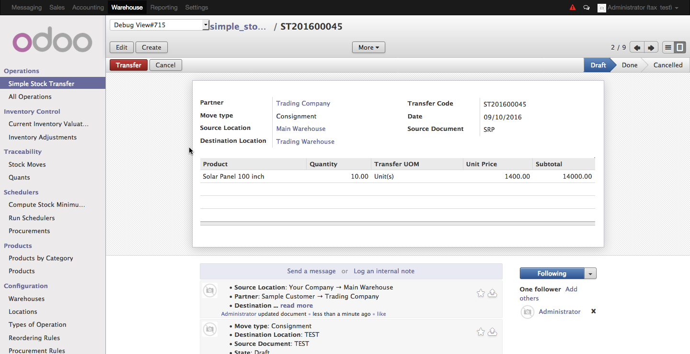
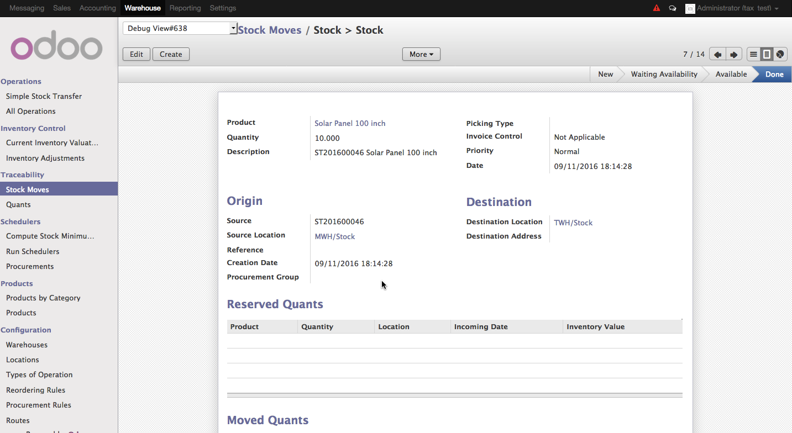

<section class="oe_container">
    <div class="oe_row oe_spaced">
        <div class="oe_span12">
            <h2 class="oe_slogan">Simple Stock Transfer</h2>
            <h3 class="oe_slogan">Easy transfer stocks between warehouses</h3>
        </div>
        <div class="oe_span6">
            <div class="oe_demo oe_picture oe_screenshot">
                 
				 <br />
				 
            </div>
        </div>
        <div class="oe_span6">
            <p class="oe_mt32">
			    Transfer stocks in Odoo the easiest way:
			        * Create an easy transfer form.
			        * Specify the source warehouse and destination warehouse.
			        * Specify the products and the quantities.
			        * Click the transfer button.
        
			    During the process above the module automatically:
			        * Checked the availability of stocks in the source warehouse
			        * If available, the stocks are immediately reserved
			        * The stock moves are automatically processed and transferred
        
			    If you have questions/concerns, contact me at reggievaldez@outlook.com
			    I am more than happy to assist you.
            </p>
            
        </div>
    </div>
</section>
